Focus together.
Someone asked you to focus with them. On a phone with Idyll, this link opens in the app, and the same apps rest on both phones for the same hour.
If it opened here instead, install Idyll, then tap the link again in the chat it came from.
Get Idyll for Android
Free, for good. No account. Everything after the # in this link stays on your phone: this page reads it in your browser and sends it nowhere.